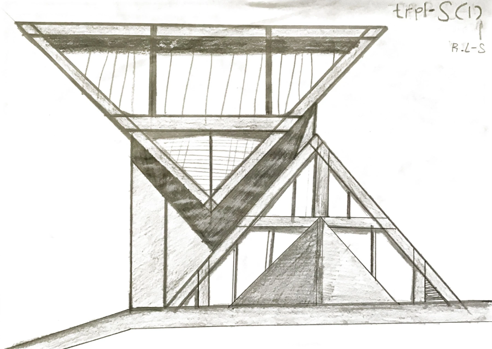
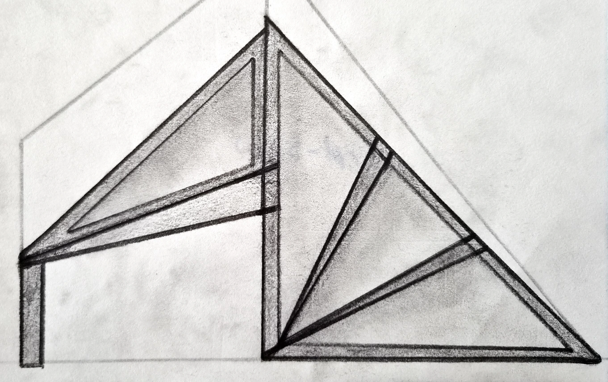

An architectural sketchbook
Where triangles
become shelter.
Nothing is hidden. Roof, support, opening, and path become the atmosphere of the house.
Enter the studytrpl-S (1) · R-L-S
A house suspended between shelter, bridge, and frame.
One drawing becomes a field of structural questions. The triangle is not decoration here. It carries weight, directs movement, and opens space.

Elevation study · Pencil on paper
Reading the drawing
Form
A roof becomes
A roof becomes
a span.
The widest line arrives first. Beneath it, the house narrows, gathers tension, and finds the ground.
Tension
Three edges hold
Three edges hold
a room.
The inverted triangle feels suspended and grounded at once. Its weight is visible, but its center remains open.
Movement
The stair is
The stair is
another stroke.
It does more than connect levels. It becomes a structural line, carrying the eye beyond the house itself.
trpl-S (2)
One structure,
drawn with weight.
The second edition stands as the resolved study: paired triangular volumes given weight, depth, and a clearer structural frame.

Edition 02
Scanned study